We built a physically based path tracer from the ground up. Camera rays are generated through each pixel and intersected with triangles and spheres. A bounding volume hierarchy (BVH) cuts the cost of each intersection from linear to roughly logarithmic in the number of primitives. Surfaces are shaded with a Lambertian BSDF, using Monte Carlo estimates of the reflection equation: first for direct lighting (uniform hemisphere sampling and importance sampling of lights), then for full global illumination with recursive bounces terminated by Russian roulette. Finally, adaptive sampling stops tracing rays through a pixel once its value has statistically converged.
The biggest lesson was how much rendering is a statistics problem. Every image is an estimate of an integral, and most of the work is about lowering its variance: sampling the lights instead of the hemisphere, adding samples where the image is noisy, and keeping the estimator unbiased when paths are cut short. We also learned to be careful with C++ undefined behavior: a function in our bounce code was missing its return, which rendered correctly with GCC but gave dark, speckled images with MSVC on Windows (see Part 4).
Ray generation. For each pixel, raytrace_pixel takes ns_aa random points inside the pixel (the pixel's corner plus a uniform offset in [0,1]²) and normalizes them by the image width and height. Camera::generate_ray maps each normalized point \((x, y)\) to the virtual sensor at \(z=-1\) in camera space:
\[ \left((2x-1)\tan\frac{hFov}{2},\ (2y-1)\tan\frac{vFov}{2},\ -1\right), \]
converting the FOV from degrees to radians. The direction is rotated into world space by c2w and normalized, the origin is the camera position, and min_t/max_t are set to the near and far clipping planes. The pixel's value is the average radiance of its samples.
Primitive intersection. Each ray carries a valid interval \([t_{min}, t_{max}]\). A primitive reports a hit only if its \(t\) lies inside that interval, and when it does, it shrinks \(t_{max}\) to \(t\). Later tests then automatically ignore anything farther away, so whatever is left at the end is the closest hit. On a hit we record \(t\), the surface normal, the primitive and its BSDF in the Intersection.
Triangle intersection (Möller–Trumbore). A point on the ray, \(\mathbf{o} + t\mathbf{d}\), must equal a point on the triangle written in barycentric coordinates, \((1-b_1-b_2)\mathbf{p}_1 + b_1\mathbf{p}_2 + b_2\mathbf{p}_3\). Rearranging gives a 3×3 linear system in \((t, b_1, b_2)\), which Cramer's rule solves with cross and dot products. With \(\mathbf{e}_1 = \mathbf{p}_2-\mathbf{p}_1\), \(\mathbf{e}_2 = \mathbf{p}_3-\mathbf{p}_1\), \(\mathbf{s} = \mathbf{o}-\mathbf{p}_1\), \(\mathbf{s}_1 = \mathbf{d}\times\mathbf{e}_2\), \(\mathbf{s}_2 = \mathbf{s}\times\mathbf{e}_1\): \[ \begin{bmatrix} t \\ b_1 \\ b_2 \end{bmatrix} = \frac{1}{\mathbf{s}_1\cdot\mathbf{e}_1}\begin{bmatrix} \mathbf{s}_2\cdot\mathbf{e}_2 \\ \mathbf{s}_1\cdot\mathbf{s} \\ \mathbf{s}_2\cdot\mathbf{d} \end{bmatrix}. \] The ray hits the triangle when \(b_1, b_2 \ge 0\), \(b_1 + b_2 \le 1\) (the point is inside the triangle) and \(t\) is in the valid interval. A near-zero determinant means the ray is parallel to the triangle. The shading normal is the vertex normals interpolated with the same barycentric weights. Spheres are handled analytically: substituting the ray into \(|\mathbf{p}-\mathbf{c}|^2 = R^2\) gives a quadratic in \(t\). We take the nearest root inside the valid interval, and the normal is \((\mathbf{p}-\mathbf{c})/R\).
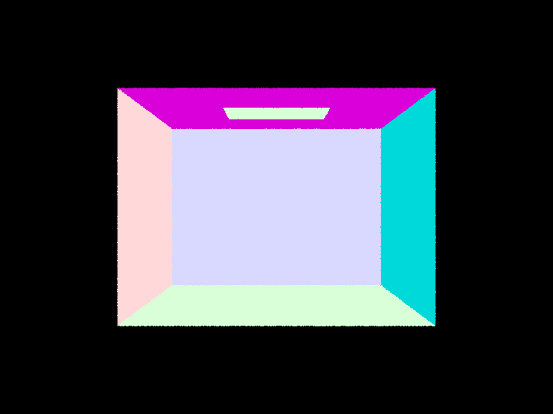 |
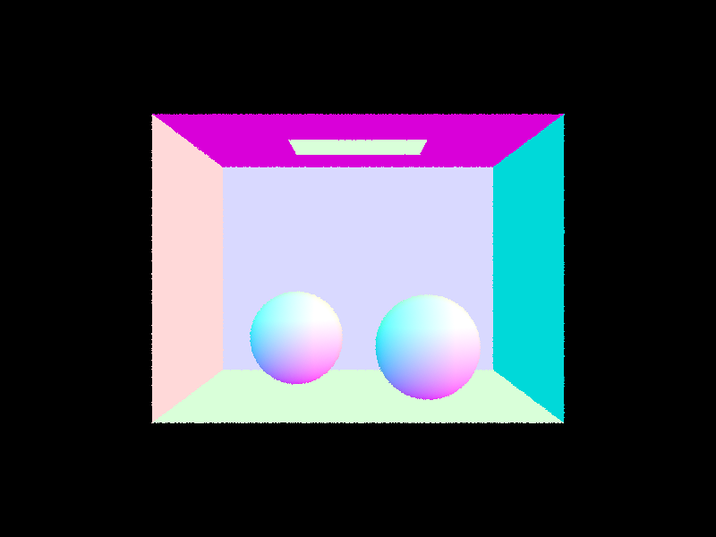 |
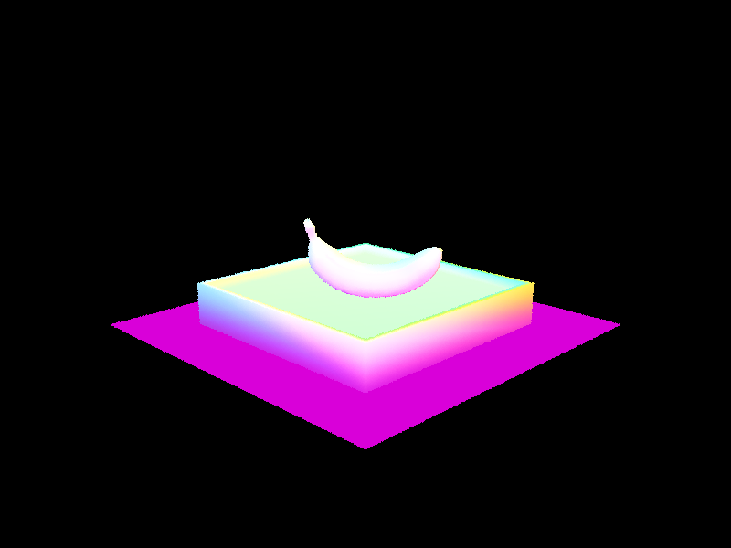 |
Construction. construct_bvh is recursive. It computes the bounding box of the current primitives (the node's box) and the bounding box of their centroids. If there are at most max_leaf_size primitives, the node becomes a leaf whose start/end iterators span that range. Otherwise we split.
Split heuristic. We split along the axis where the centroids are most spread out (the longest axis of the centroid box), at the average centroid position along that axis. std::partition reorders the primitives in place so the left group comes first, and we recurse on each half. The average follows where the geometry actually is, so it keeps the tree balanced better than the spatial midpoint when triangles are clustered. If every primitive lands on one side (for example, they all share a centroid), the child would get the same list and recurse forever, so in that case we split the range in half by count instead.
Traversal. BBox::intersect uses the slab method. For each axis it computes where the ray enters and leaves the pair of planes, and the box interval is from the latest entry to the earliest exit, clipped to the ray's \([t_{min}, t_{max}]\). If a ray misses a node's box, the whole subtree is skipped. At a leaf we test each primitive. has_intersection returns at the first hit, but intersect must visit both children, because boxes can overlap and the closest hit may be in either one. The BVH never compares distances itself: each primitive's intersect shrinks max_t, so farther boxes and primitives get rejected on their own.
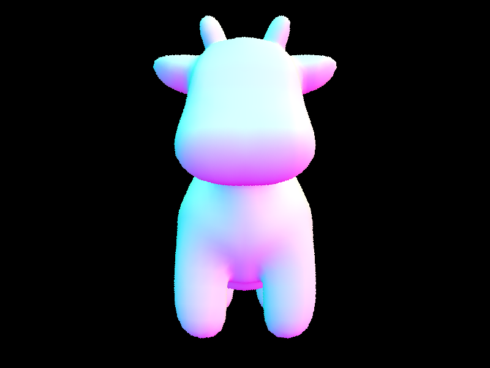 |
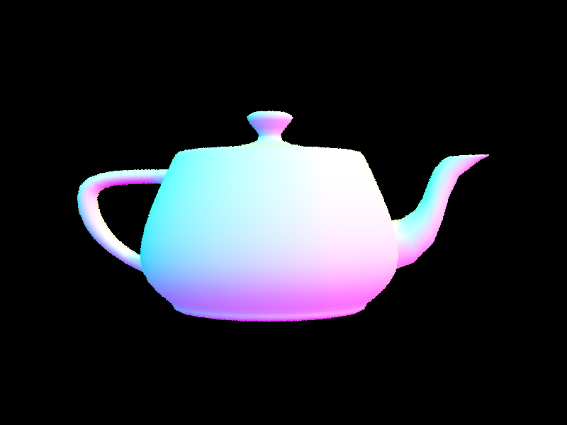 |
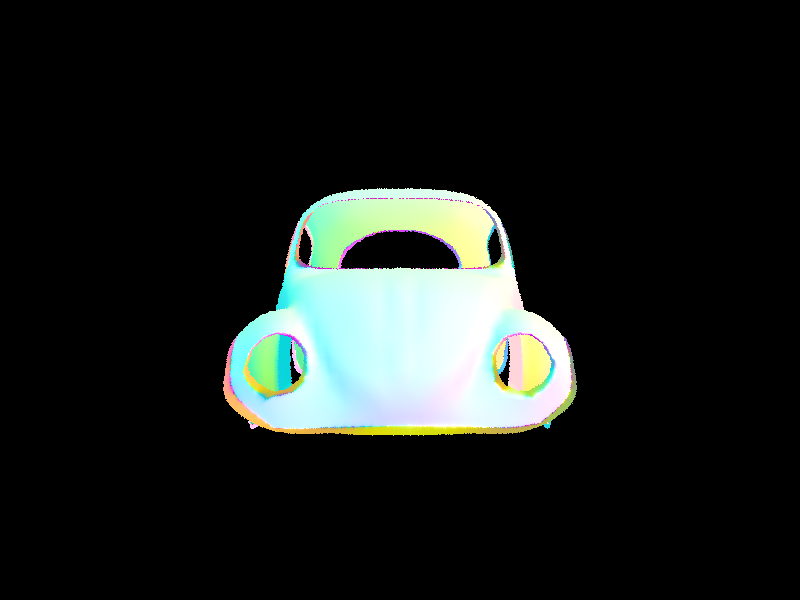 |
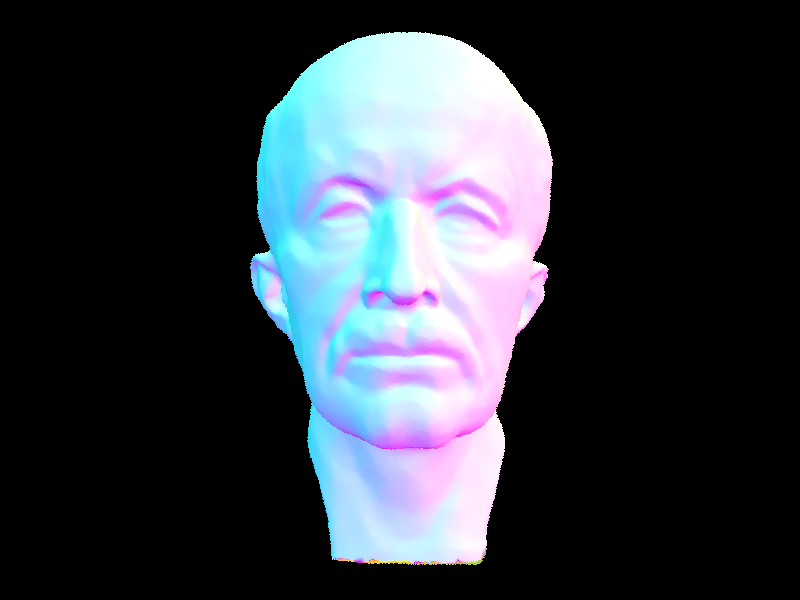 |
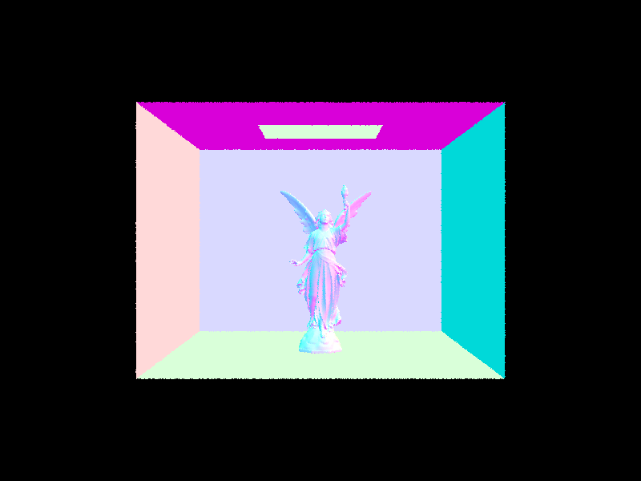 |
Timing comparison (800×600, 1 sample per pixel, 8 threads):
| Scene | Triangles | No BVH | BVH | Speedup | Tests/ray (no BVH) | Tests/ray (BVH) |
|---|---|---|---|---|---|---|
| teapot | 2,464 | 7.66 s | 0.057 s | ~134× | 227.6 | 1.23 |
| cow | 5,856 | 16.05 s | 0.099 s | ~163× | 463.9 | 1.98 |
| beetle | 7,558 | 12.43 s | 0.052 s | ~239× | 324.2 | 0.99 |
Without the BVH, every ray that reaches the scene's bounding box is tested against every primitive, so render time grows linearly with triangle count. The BVH made these scenes 134–239× faster. The intersection tests per ray show why: they dropped from hundreds to about one or two, because rays skip every subtree whose box they miss and only reach the few leaves near their actual hit. The speedup grows with scene complexity, and building the tree takes only about 5 ms, which is negligible. That is what makes meshes with hundreds of thousands of triangles, like Lucy, render in seconds. (The no-BVH tests per ray are below the triangle count because rays that miss the root box, which hit the black background, test nothing.)
The diffuse BSDF returns \(f = \rho/\pi\) (albedo over \(\pi\), so it never reflects more energy than it receives). Zero-bounce radiance is the emission of whatever the camera ray hits. Both direct lighting methods estimate the reflection equation with Monte Carlo:
\[ L_o(\mathbf{p}, \omega_o) \approx \frac{1}{N}\sum_{j=1}^{N} \frac{f(\omega_j \to \omega_o)\, L_i(\mathbf{p}, \omega_j)\, \cos\theta_j}{p(\omega_j)}. \]
We work in a local frame at the hit point where the normal is \(+z\), so \(\cos\theta_j\) is just the \(z\) component of \(\omega_j\). Rays are converted to world space before being traced, and every new ray starts at min_t = EPS_F so it doesn't re-hit the surface it leaves.
Uniform hemisphere sampling. We draw \(N\) directions uniformly on the hemisphere, so \(p(\omega) = 1/2\pi\). For each one we trace a ray. If it hits an emitter, that emission is \(L_i\); anything else contributes zero.
Importance sampling the lights. For each light we ask sample_L for a direction toward a point on the light, along with its radiance, distance and pdf. We skip the sample if the light is behind the surface (\(\cos\theta \le 0\)). Otherwise we cast a shadow ray with max_t = dist − EPS_F, and if anything blocks it, the point is in shadow from that light. Unblocked samples go into the same estimator. Point lights are sampled once, since every sample would be identical.
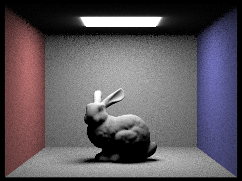 |
|
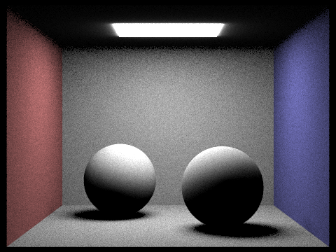 |
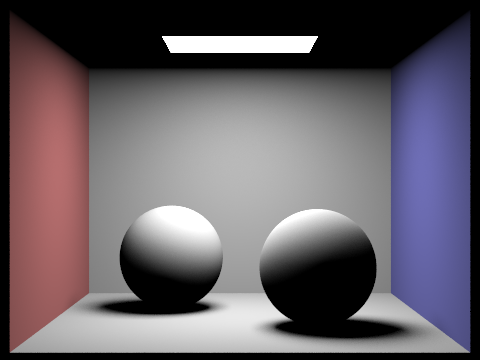 |
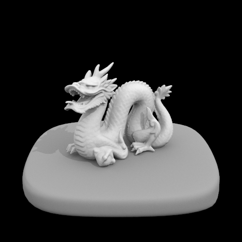 |
Soft-shadow noise vs. light rays (CBbunny, 1 sample per pixel, light sampling):
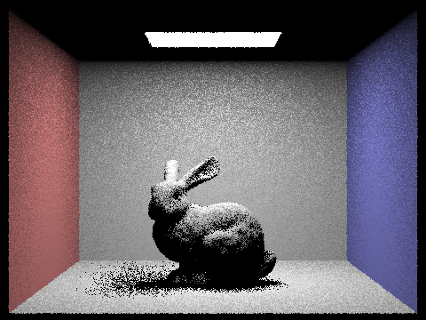 |
|
With 1 light ray, each pixel's shadow test is a single yes/no, so the soft shadow under the bunny is a field of black and lit speckles. At 4 and 16 rays each pixel averages more shadow tests and the speckle turns into fine grain, and at 64 the penumbra is a smooth gradient. Noise falls roughly as \(1/\sqrt{N}\), so each 4× increase in light rays halves it, while render time grows linearly (0.05 s, 0.10 s, 0.36 s, 1.14 s).
Hemisphere vs. light sampling. With identical settings, uniform hemisphere sampling gives visibly grainy images, while light sampling gives clean ones, and it was also faster (38.1 s vs. 65.2 s on CBbunny, 30.5 s vs. 43.3 s on CBspheres). Hemisphere sampling picks directions blindly, so most samples miss the small area light and contribute nothing, while the few that hit it carry a large weight, which means high variance. Light sampling aims every sample at the light and only has to check visibility, so nearly every sample is useful. Hemisphere sampling also cannot render point lights at all: a random direction has zero probability of hitting a single point.
Sampling the BSDF. DiffuseBSDF::sample_f draws a cosine-weighted direction (\(p(\omega) = \cos\theta/\pi\)), sets the pdf and returns \(f\).
Indirect lighting. Each camera ray starts with depth = max_ray_depth, the number of bounces it may still take. est_radiance_global_illumination adds the zero-bounce emission, then calls at_least_one_bounce_radiance, which at each hit point:
one_bounce_radiance);depth − 1;Emission is only added at the camera's first hit; at later hits, light from emitters is counted by the direct-lighting term, so nothing is double counted. With isAccumBounces = false, each level adds its direct lighting only when it is the last bounce (depth == 1), and the zero-bounce term only when m = 0, so the image shows exactly the \(m\)-th bounce.
Russian roulette. The first indirect bounce is always taken. After that, a path continues with probability 0.65 and surviving paths are divided by 0.65, which keeps the estimator unbiased while letting long paths die off. That keeps -m 100 cheap.
Bug we hit. Our first version left out the final return L_out; in at_least_one_bounce_radiance. That is undefined behavior in C++. GCC happened to return the right value, but MSVC returned garbage, so on Windows any render with 2+ bounces came out darker than direct lighting alone, which is impossible. We found it by rebuilding on Linux, where an unoptimized build hit a trap instruction at the end of the function.
Global illumination (1024 samples per pixel):
Direct only vs. indirect only (CBspheres, 1024 spp):
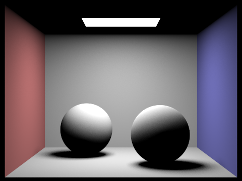 |
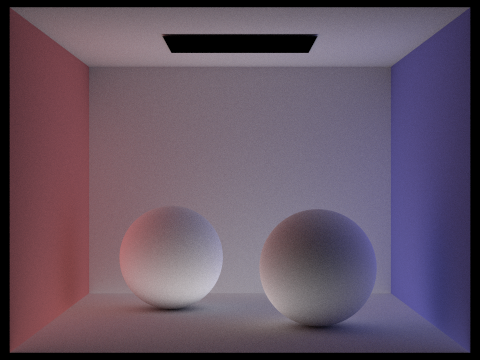 |
Direct lighting alone leaves the ceiling and the shadows completely black and gives hard contrast. Indirect lighting alone has a black light source (it is never seen directly) but softly fills every surface, including the ceiling and the shadows, with red and blue bleeding off the walls onto the floor and spheres. Adding the two reproduces the full render (we checked numerically: on the left wall, direct + indirect = 0.238 vs. 0.239 for the full render). The indirect-only view was generated by skipping the zero-bounce term and the first bounce's direct lighting, enabled with an environment variable so no code edits were needed between renders.
Only the m-th bounce (CBbunny, isAccumBounces = false, 1024 spp):
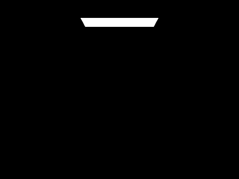 |
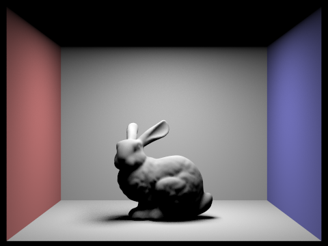 |
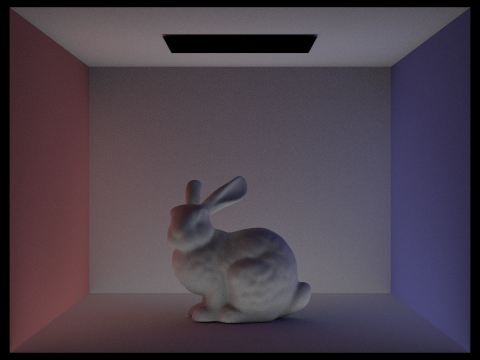 |
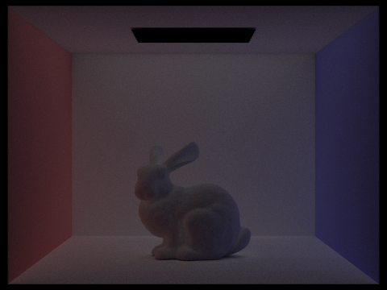 |
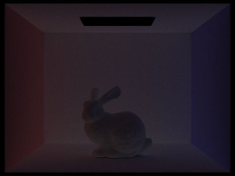 |
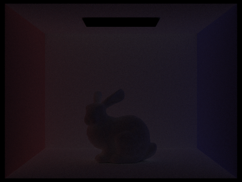 |
The 2nd bounce is light that hit one surface before reaching the one we see. It lights everything direct lighting can't reach: the ceiling (which faces away from the light), the underside of the bunny and the inside of its shadow. It also carries color, so the red and blue walls tint the floor, back wall and bunny. The 3rd bounce is dimmer, since each diffuse bounce absorbs energy, and flatter, since the light has scattered twice. It mostly evens out the lighting and spreads the color bleeding further. A rasterizer computes only direct lighting and usually approximates the rest with a constant "ambient" term, so it misses all of this. These bounces are what give the path-traced image filled-in shadows, color bleeding and lit surfaces that face away from the light.
Accumulated bounces (CBbunny, isAccumBounces = true, 1024 spp):
Compared with the unaccumulated renders, each accumulated image is the sum of all bounces up to m, so the scene gets steadily brighter and fuller: m = 1 is plain direct lighting with black shadows and ceiling, m = 2 adds most of the fill light, and from m = 3 on the changes become small because each extra bounce carries less energy. We verified the sums: e.g. on the back wall at m = 3, the accumulated value is 0.356 and the sum of bounces 0 through 3 is 0.355.
Russian roulette (CBbunny, 1024 spp). Russian roulette is always enabled in our implementation, so the m = 0–4 renders above are also the Russian roulette renders; here they are with m = 100:
The m = 100 render is within 1–2% of m = 5 and only slightly brighter (it adds the small contribution of bounces 6 and beyond), yet it took about as long, because roulette ends most paths after a few bounces.
Samples per pixel (CBspheres, 4 light rays, m = 5):
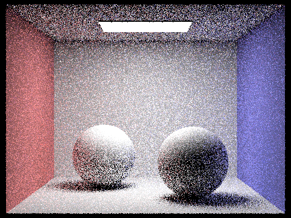 |
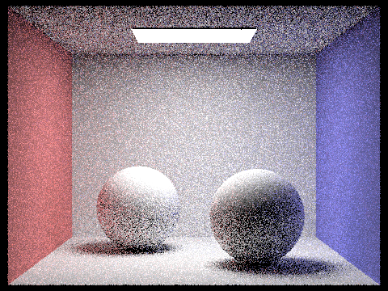 |
||
At 1–4 spp the image is dominated by noise, especially in regions lit only indirectly (the ceiling and shadows), because each pixel averages just a few random light paths. Noise shrinks as \(1/\sqrt{N}\): by 16–64 spp the structure is clear but grainy, and at 1024 spp the soft shadows and color bleeding are smooth.
Idea. Pixels converge at different rates. A flat, directly lit wall settles after a few dozen samples, while a pixel in a soft shadow or lit mostly by bounced light keeps fluctuating. Adaptive sampling stops each pixel once we are statistically confident about its value, and spends the saved samples on the hard pixels.
Implementation. In raytrace_pixel, for each sample we add its radiance to the pixel total and keep two running sums of its illuminance \(x_k\): \(s_1 = \sum x_k\) and \(s_2 = \sum x_k^2\). Every samplesPerBatch samples we compute
\[ \mu = \frac{s_1}{n}, \qquad \sigma^2 = \frac{1}{n-1}\left(s_2 - \frac{s_1^2}{n}\right), \qquad I = 1.96\,\frac{\sigma}{\sqrt{n}}, \]
and stop if \(I \le \text{maxTolerance}\cdot\mu\). That is, with 95% confidence the pixel's true mean lies within 5% of our estimate. Otherwise we keep going up to the -s maximum. The pixel is set to the average of the samples actually taken, and that count is written to sampleCountBuffer for the rate image. We only test once per batch to avoid recomputing statistics after every sample.
Settings: max 2048 spp, -a 64 0.05, 1 light ray, max depth 5, 480×360. In the rate images, red means many samples and blue means few.
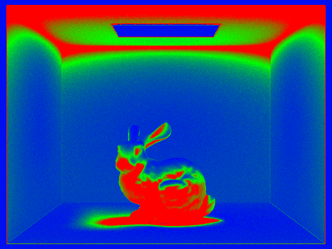 |
|
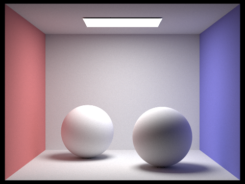 |
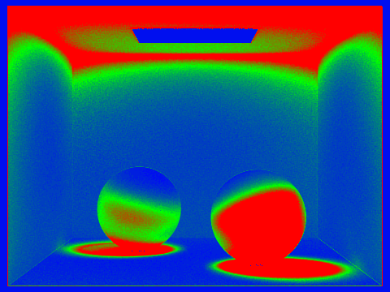 |
The ceiling (lit only by bounced light), the shadows under the bunny and spheres, and the shaded sides of the objects stay red: their variance is high, so they use most of the 2048 samples. The directly lit walls and floor turn blue after only a few batches. The final images are noise-free, and the bunny took 3 min 52 s, roughly half of what a uniform 2048 spp would have cost.
No extra credit items were implemented.
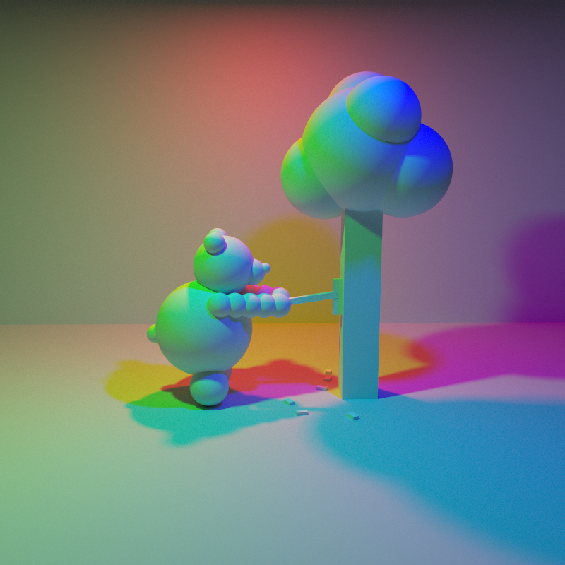
Every object in this scene is pure white. All the color comes from three area lights (red, green and blue) in a ring overhead. Wherever the bear or the tree blocks one light, its shadow takes the mix of the other two (cyan, magenta or yellow), and overlapping shadows split into the pure primaries. The scene was generated by a Python script that writes the COLLADA file directly (a bear made of spheres; the tree, axe and wood chips made of boxes) and was rendered with adaptive sampling up to 1024 samples per pixel, 2 light rays and max depth 5.
We pair programmed the whole assignment: we sat together and worked on one computer, going through the relevant lecture and discussion material for each part before implementing it, so we both understood every piece of the pipeline rather than splitting it up. It went well overall. The main friction was hardware: both of our laptops are fairly weak, so the 1024 and 2048 samples-per-pixel renders took a long time, and we learned to test at low resolution and low sample counts before starting the full batches. The most interesting part for us was seeing the theory show up directly in the images. Rendering only the 2nd and 3rd bounces made it obvious where the ceiling light and color bleeding come from, and the adaptive sampling rate images lit up exactly the regions lit by noisy indirect light. We also learned a lot from the Windows-only Part 4 bug: an image that was darker with more bounces was physically impossible, which pointed us to undefined behavior (a missing return) rather than a math error.
We used Claude (an LLM) extensively throughout this assignment as a learning, implementation, and writing tool, alongside course lectures and discussions.